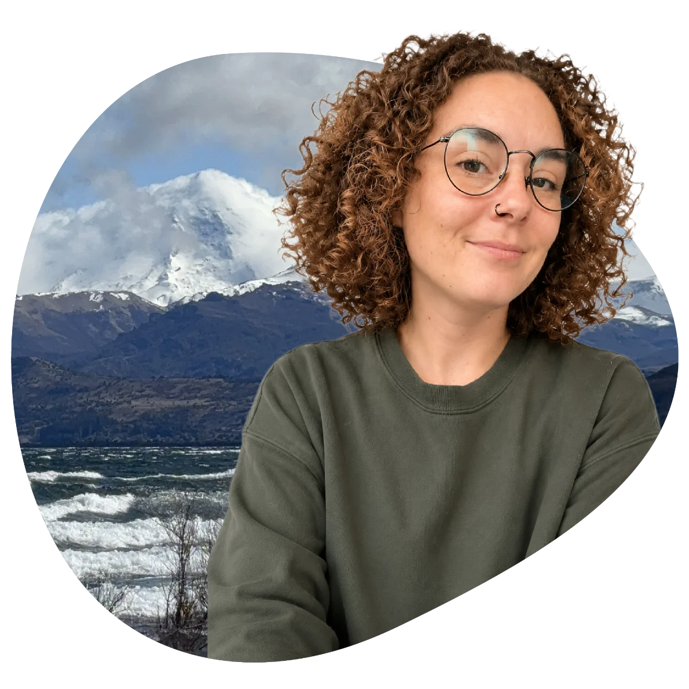

Hi, I’m Victoria.
A product designer who cares as much about how things feel as how they work.
Who I am .
Hi! I’m Victoria, an Industrial Designer from the University of Buenos Aires with a specialization in UX/UI Design. Throughout my career I’ve focused on creating digital products that bring together function, aesthetics, and a deep understanding of what people really need.
I grew up in Argentine Patagonia — a place that shaped the way I see the world: an eye for detail, a connection to nature, and a real appreciation for spaces that are simple but meaningful.
What I do .
Today I work as a Product Designer across UX, UI and product strategy. I turn messy, complex problems into clear, intuitive experiences — balancing user needs, business goals and a bit of playful craft. I believe design is empathy made visible: every decision is a small act of caring for the person on the other side of the screen.
Where I’m headed .
I want to keep designing products that improve people’s everyday lives — because the real value of design often lives in the small details, not just the big innovations. I do my best work alongside interdisciplinary teams, and I enjoy leading when it’s needed, drawing out the best in people. More than anything, I want to build where the human matters most — where the process is as valued as the result. Products aren’t just used — they’re felt.
Beyond the screen .
Outside of work you’ll find me outdoors, behind a camera, or around a table playing strategic board games like Catan, Carcassonne or 7 Wonders.